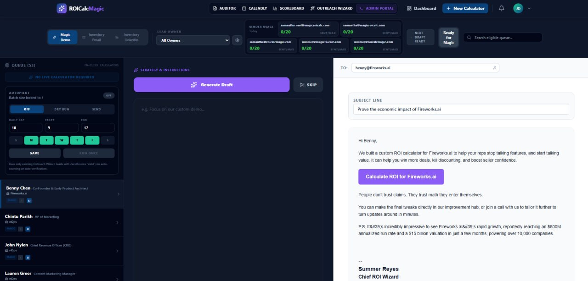

AI invention 14
Outreach Wizard
An outbound sales asset workflow for finding SaaS prospects, generating calculator angles, and producing personalized first-touch copy around measurable buyer value instead of generic feature pitches.
Outreach
GTM
Personalization
Pipeline
